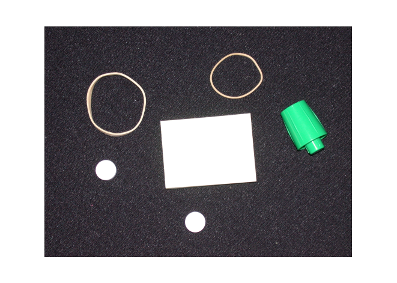
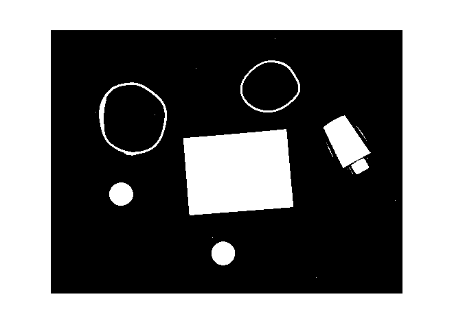
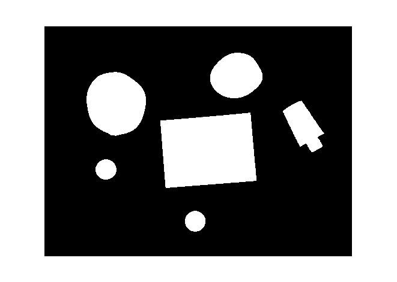
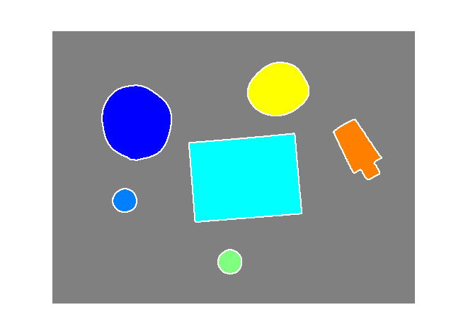
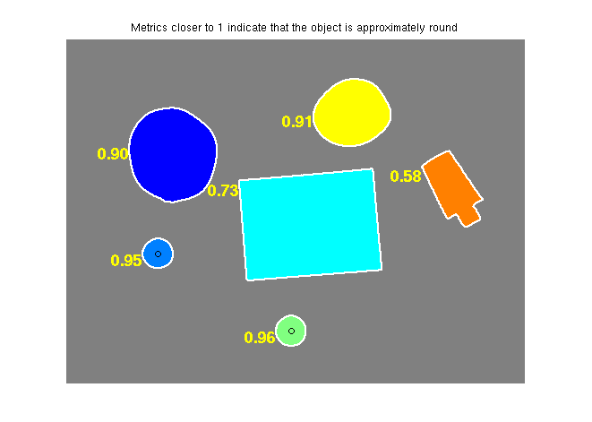

Your goal is to classify objects based on their roundness using bwboundaries, a boundary tracing routine.
Read in pills_etc.png.
RGB = imread('pillsetc.png');
imshow(RGB);Convert the image to black and white in order to prepare for boundary tracing using bwboundaries.
I = rgb2gray(RGB); threshold = graythresh(I); bw = im2bw(I,threshold); imshow(bw)
Using morphology functions, remove pixels which do not belong to the objects of interest.
% remove all object containing fewer than 30 pixels bw = bwareaopen(bw,30); % fill a gap in the pen's cap se = strel('disk',2); bw = imclose(bw,se); % fill any holes, so that regionprops can be used to estimate % the area enclosed by each of the boundaries bw = imfill(bw,'holes'); imshow(bw)
Concentrate only on the exterior boundaries. Option 'noholes' will accelerate the processing by preventing bwboundaries from searching for inner contours.
[B,L] = bwboundaries(bw,'noholes'); % Display the label matrix and draw each boundary imshow(label2rgb(L, @jet, [.5 .5 .5])) hold on for k = 1:length(B) boundary = B{k}; plot(boundary(:,2), boundary(:,1), 'w', 'LineWidth', 2) end
Estimate each object's area and perimeter. Use these results to form a simple metric indicating the roundness of an object:
metric = 4*pi*area/perimeter^2.
This metric is equal to one only for a circle and it is less than one for any other shape. The discrimination process can be controlled by setting an appropriate threshold. In this example use a threshold of 0.94 so that only the pills will be classified as round.
Use regionprops to obtain estimates of the area for all of the objects. Notice that the label matrix returned by bwboundaries can be reused by regionprops.
stats = regionprops(L,'Area','Centroid'); threshold = 0.94; % loop over the boundaries for k = 1:length(B) % obtain (X,Y) boundary coordinates corresponding to label 'k' boundary = B{k}; % compute a simple estimate of the object's perimeter delta_sq = diff(boundary).^2; perimeter = sum(sqrt(sum(delta_sq,2))); % obtain the area calculation corresponding to label 'k' area = stats(k).Area; % compute the roundness metric metric = 4*pi*area/perimeter^2; % display the results metric_string = sprintf('%2.2f',metric); % mark objects above the threshold with a black circle if metric > threshold centroid = stats(k).Centroid; plot(centroid(1),centroid(2),'ko'); end text(boundary(1,2)-35,boundary(1,1)+13,metric_string,'Color','y',... 'FontSize',14,'FontWeight','bold'); end title(['Metrics closer to 1 indicate that ',... 'the object is approximately round']);